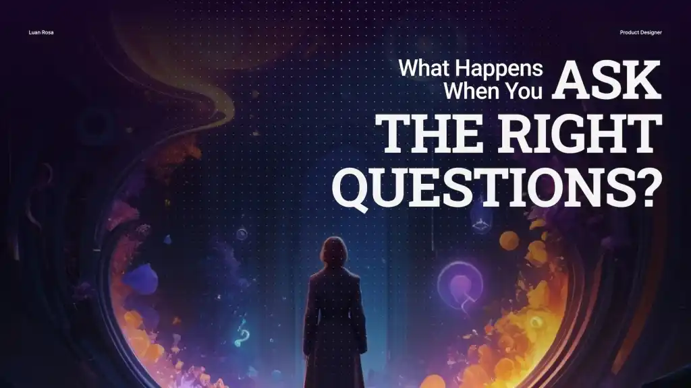

A practical guide to turning subjective design feedback into clearer, more strategic conversations.

View full imageThe real challenge behind stakeholder feedback
Talking design with stakeholders can feel like a rollercoaster. They often know that something feels off, but they may not have the language to explain what they are imagining. Designers, on the other hand, sometimes struggle to translate visual, interaction and strategic decisions into terms that make sense outside the design team.
I remember being in meetings where a stakeholder was visibly frustrated because they could not quite articulate what they were thinking. The solution was not to defend the design harder. It was to slow down, ask better questions and help them give shape to the idea behind their reaction.
That is when I realized that the key to understanding and helping stakeholders is not having the perfect answer immediately. It is knowing how to ask the right questions.
The power of asking the right questions
One of the most important questions is simple: “What problem are you trying to solve?” This cuts through the noise and gets to the core of the discussion. Once you understand the problem, you can evaluate whether the suggestion actually solves it or whether another solution would work better.
Another useful question is: “What are the advantages of doing it this way?” This invites the stakeholder to explain their reasoning without feeling attacked. It creates a neutral space where ideas can be compared based on value instead of preference.
You can also ask: “What do you suggest?” Sometimes stakeholders have strong opinions but do not yet understand the design implications of their suggestion. Giving them space to propose a solution helps them participate in the complexity of the work.
A fourth question I like is: “How will this affect our goals?” This helps connect the conversation back to product objectives, conversion, usability, clarity or whatever success metric matters in that context.
Finally, “Where have you seen this before?” can be powerful. Asking for references is not dismissing the idea. It is a way to understand the patterns, expectations and inspirations behind the feedback.
Building trust through good questions
The goal of asking questions is not just to collect more information. It is to help stakeholders articulate what they mean so the team can understand the real intention behind the feedback.
Even when you already understand what they are saying, asking thoughtful questions shows that you are listening and that you care about their input. That makes stakeholders feel valued and included in the process.
When stakeholders feel heard, they are much more likely to trust your recommendations later. The conversation stops being a battle over taste and becomes a shared effort to solve the right problem.
A better way to lead design conversations
The designer’s role is not only to present screens. It is to facilitate alignment. That means reframing subjective comments, translating design decisions into business and user impact, and guiding the conversation toward better outcomes.
Good questions create better feedback. Better feedback creates better decisions. And better decisions create better products.
takeaway